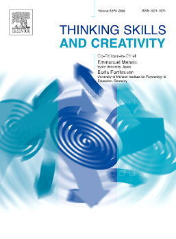

Publications
Research on human–computer interaction, learning, and creative thinking.
Published Journal Articles 4
2026
Empowering Vocational Training for Middle-aged, Elderly, and Low-educated Individuals: A Design Approach for Entertainment-Based Learning
Jianxiong Fan, Rouqin Wu, Chaolan Tang, & Xian Yang (2026).
International Journal of Human–Computer Interaction
JCR Best Q1Impact Factor 6.1 (2025)- Entertainment-based learning
- Vocational training
- Social media
- Video element design
- PLS-SEM
Key Elements of Short-Video Entertainment-Based Learning for Vocational Training in Middle-Aged and Older Adults with Low Educational Attainment
Jianxiong Fan, Rouqin Wu, Chaolan Tang, & Xian Yang (2026).
Thinking Skills and Creativity
SSCI · JCR Q1Impact Factor 5.3 (2025)- Short-video learning
- Entertainment-based learning
- Vocational training
- Inclusive learning

Creative Thinking in Artistic Creation: Cognitive and Emotional Mechanisms of Interaction-based Thinking
Rouqin Wu, Jianxiong Fan Chaolan Tang,Shuwei Huang, & Xian Yang (2026).
Thinking Skills and Creativity
SSCI · JCR Q1Impact Factor 5.3 (2025)- Creative thinking
- Artistic creation
- Cognition and emotion
- Interaction-based thinking
2025
Interaction-based creative thinking research and its application in artistic creation
Rouqin Wu, Jianxiong Fan, Chaolan Tang, & Xian Yang (2025).
Thinking Skills and Creativity, 56, 101750
SSCI · JCR Q1Impact Factor 5.3 (2025)- Interaction-based thinking
- Creative thinking
- Artistic creation
- Interaction design
Manuscripts 3
Status as listed in my October 2026 CV.
From Psychophysiological Process Fit to Technology Acceptance: A Dynamic Adaptation Mechanism in Short-Video-Based Safety Training
Jianxiong Fan et al.
Under review · Information Processing & Management
Reconceptualising Cognitive Load in Short-Video Vocational Training: A Three-Dimensional Framework Supported by Psychophysiological and Behavioural Evidence
Jianxiong Fan et al.
In preparation
A Study on the observable behavioral differences of different types of creative thinking in artistic creation
Rouqin Wu, Jianxiong Fan et al.
Submitted · Creativity Research Journal